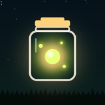

LASSO: Firefly Catch
EnglishTürkçe · Privacy / Gizlilik
Support · FAQ
How do I play?
Draw a loop around the fireflies with one finger; when the loop closes, everything inside goes into your jar. Bigger catches and quick chains score more. Your light slowly runs down, so keep catching. Journey has 50 levels with their own goals and boss encounters; Festival is the endless mode that opens along the way.
Where is my progress stored?
Only on your device. There is no account and no cloud save: levels, stars, records, collection and settings stay in the app's local storage and are never sent to us. Deleting the app deletes them (unless your device restores them from its own backup). Progress does not move to another device by itself.
How do I reset my stats?
Home → Settings → Reset stats (asks for confirmation). Your best score, stats and total light are erased; your settings stay.
Ads
The game is free and supported by ads. Rewarded ads are always optional: “Watch an ad · continue with light” after losing, and once a day “harvest 2×” in Festival. The reward is given only when the ad is watched to the end; closing it early costs you nothing. Now and then a short ad appears between levels — never during play, never around a boss or a story scene, and not at all in the first 10 levels.
Ad and tracking permission
- iPhone: the game asks once whether ads can be chosen based on your interests. Whatever you pick, the whole game stays open; only the ads you see change. To change it later: iOS Settings → Privacy & Security → Tracking.
- EU / EEA, UK, Switzerland: Google's consent form is shown before the first ads. To change your choice: in the game, Settings → Ad preferences (this row appears only where the form applies).
- Details: Privacy policy (also in the game under Settings → Privacy policy).
Sound and Bluetooth
- No sound? The game follows your iPhone's silent switch (Silent mode mutes it) and the volume buttons. In the game, check Settings → Sound effects / Music / Nature.
- Other audio: your own music or podcast keeps playing; the game mixes with it. Turn off Music in Settings if you only want the effects.
- Bluetooth headphones: when you connect or disconnect headphones, or come back from an ad, the game rebuilds its audio for the new output; sound returns within a second or two and the music fades back in. If the sound stays silent or crackles, switch to another app and back, or reconnect the headphones.
- Vibration can be turned off in Settings → Vibration.
Something wrong?
Write to us: eraydurukan48@hotmail.com. Including your device model, iOS version and the app version (at the bottom of Settings) helps us help you faster.
Destek · Sık sorulanlar
Nasıl oynanır?
Tek parmakla ateşböceklerinin çevresine bir döngü çiz; döngü kapanınca içindekiler kavanozuna girer. Büyük yakalamalar ve hızlı zincirler daha çok puan verir. Işığın yavaş yavaş azalır, yakalamayı sürdür. Yolculuk'ta kendi hedefleri olan 50 bölüm ve boss karşılaşmaları var; Şenlik yol üstünde açılan sonsuz mod.
İlerlemem nerede saklanır?
Yalnızca cihazında. Hesap ve bulut kaydı yok: bölümler, yıldızlar, rekorlar, koleksiyon ve ayarlar uygulamanın yerel depolamasında durur, bize gönderilmez. Uygulamayı silersen onlar da silinir (cihazın kendi yedeğinden geri yüklemezse). İlerleme kendiliğinden başka cihaza taşınmaz.
İstatistiklerimi nasıl sıfırlarım?
Ana ekran → Ayarlar → İstatistikleri sıfırla (onay ister). Rekorun, istatistiklerin ve toplam ışığın silinir; ayarların kalır.
Reklamlar
Oyun ücretsizdir ve reklamla desteklenir. Ödüllü reklamlar her zaman isteğe bağlıdır: kaybedince “Reklam izle · ışıkla devam et” ve Şenlik'te günde bir kez “hasat 2×”. Ödül yalnızca reklam sonuna kadar izlenince verilir; erken kapatmanın bir cezası yoktur. Arada bir, bölümler arasında kısa bir reklam çıkar — oyun sırasında, boss ya da hikâye sahnesi çevresinde asla; ilk 10 bölümde hiç.
Reklam ve izleme izni
- iPhone: oyun bir kez, reklamların ilgi alanına göre seçilip seçilmeyeceğini sorar. Hangisini seçersen seç oyunun tamamı açık kalır; yalnızca gördüğün reklamlar değişir. Sonradan değiştirmek için: iOS Ayarlar → Gizlilik ve Güvenlik → İzleme.
- AB / AEA, Birleşik Krallık, İsviçre: ilk reklamlardan önce Google'ın onay formu gösterilir. Seçimini değiştirmek için: oyunda Ayarlar → Reklam tercihleri (bu satır yalnızca formun geçerli olduğu yerde görünür).
- Ayrıntılar: Gizlilik politikası (oyunda Ayarlar → Gizlilik politikası altında da var).
Ses ve Bluetooth
- Ses yok mu? Oyun iPhone'un sessiz anahtarına (Sessiz mod sesi kapatır) ve ses düğmelerine uyar. Oyunda Ayarlar → Ses efektleri / Müzik / Doğa anahtarlarına bak.
- Başka ses: kendi müziğin ya da podcast'in çalmaya devam eder; oyun onunla karışır. Yalnızca efektleri istiyorsan Ayarlar'dan Müzik'i kapat.
- Bluetooth kulaklık: kulaklığı takıp çıkardığında ya da reklamdan döndüğünde oyun sesini yeni çıkışa göre yeniden kurar; ses bir iki saniye içinde döner, müzik yumuşakça geri gelir. Ses gelmezse ya da cızırdarsa başka bir uygulamaya geçip geri dön ya da kulaklığı yeniden bağla.
- Titreşim Ayarlar → Titreşim'den kapatılabilir.
Bir sorun mu var?
Bize yaz: eraydurukan48@hotmail.com. Cihaz modelini, iOS sürümünü ve uygulama sürümünü (Ayarlar'ın en altında) eklersen daha hızlı yardımcı oluruz.